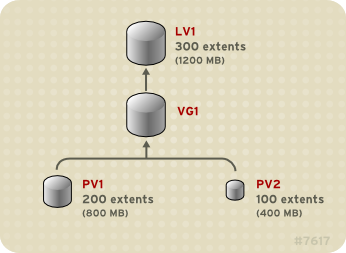

การใช้งาน Logical Volume Manager (LVM)
ใน Linux สามารถที่จะนำเอา physical volume หรือ hardisk มารวมกันใช้งานเป็นก้อน เรียกว่า volume groups (VG) มีลักษณะเป็น Logical Abstraction layer และนำเอา VG มาแบ่งเป็น Logical Volume (LV) ตามขนาดที่ต้องการ ก่อนนำไป mount กับ file system
LVM มีความยืดหยุดในการใช้งาน สามารถที่จะเพิ่มหรือลดขนาดได้โดยไม่จำเป็นต้องหยุด Application หรือไม่จำเป็นต้อง unmount file systems

Disk ที่นำมาใช้งานเป็น Physical volume ไม่จำเป็นต้องมีขนาดที่เท่ากัน โดยหน่วยขนาดของความจุ จะอ้างอิงเป็นหน่วยเรียกว่า extents แต่ละ extends มีขนาด 4 MB เช่นหาก PV1 มีขนาดตามรูปด้านล่าง 200 extents ก็มีขนาด 800MB

ขั้นตอนการใช้งาน
- initialize partition ด้วย คำสั่ง fdisk และมีชนิดเป็น 8e (Linux LVM)
- เปลี่ยน partition ที่ต้องการใช้งาน เป็น LVM ให้เป็น Physical Volume ด้วยคำสั่ง pvcreate
- สร้าง Volume Group จาก Physical Volume ที่สร้างจากข้อที่ 1
- สร้าง Logical Volume และ Mount กับ file system
vim Vagrantfile
# -*- mode: ruby -*-
# vi: set ft=ruby :
Vagrant.configure("2") do |config|
config.vm.box = "bento/centos-7.3"
config.vm.network "private_network", ip: "192.168.33.100"
config.vm.provider "virtualbox" do |vb|
unless File.exist?('./secondDisk.vdi')
vb.customize ['createhd', '--filename', './secondDisk.vdi', '--variant', 'Fixed', '--size', 10 * 1024]
end
unless File.exist?('./thirdDisk.vdi')
vb.customize ['createhd', '--filename', './thirdDisk.vdi', '--variant', 'Fixed', '--size', 20 * 1024]
end
unless File.exist?('./fourthDisk.vdi')
vb.customize ['createhd', '--filename', './fourthDisk.vdi', '--variant', 'Fixed', '--size', 30 * 1024]
end
vb.memory = "4096"
vb.cpus = "2"
vb.customize ['storageattach', :id, '--storagectl', 'SATA Controller', '--port', 1, '--device', 0, '--type', 'hdd', '--medium', './secondDisk.vdi']
vb.customize ['storageattach', :id, '--storagectl', 'SATA Controller', '--port', 2, '--device', 0, '--type', 'hdd', '--medium', './thirdDisk.vdi']
vb.customize ['storageattach', :id, '--storagectl', 'SATA Controller', '--port', 3, '--device', 0, '--type', 'hdd', '--medium', './fourthDisk.vdi']
end
end
สำหรับ Vagrantfile จะมีการเพิ่ม disk ไป 3 ลูก /dev/sdb, /dev/sdc, /dev/sdd ที่มีขนาดที่ไม่เท่ากัน
# lsblk
NAME MAJ:MIN RM SIZE RO TYPE MOUNTPOINT
sda 8:0 0 40G 0 disk
├─sda1 8:1 0 1G 0 part /boot
└─sda2 8:2 0 39G 0 part
├─cl-root 253:0 0 37G 0 lvm /
└─cl-swap 253:1 0 2G 0 lvm [SWAP]
sdb 8:16 0 10G 0 disk
sdc 8:32 0 20G 0 disk
sdd 8:48 0 30G 0 disk
จากนั้นใช้คำสั่ง fdisk เพื่อแบ่ง partition และ ชนิด 8e ทั้ง /dev/sdb, /dev/sdc/, /dev/sdd ดังตัวอย่าง
# fdisk /dev/sdb
Welcome to fdisk (util-linux 2.23.2).
Changes will remain in memory only, until you decide to write them.
Be careful before using the write command.
Device does not contain a recognized partition table
Building a new DOS disklabel with disk identifier 0xa3b934b4.
Command (m for help): n #<---- new partition
Partition type:
p primary (0 primary, 0 extended, 4 free)
e extended
Select (default p): p #<---- เลือกเป็น primary
Partition number (1-4, default 1):
First sector (2048-20971519, default 2048): #<---- Enter ผ่าน
Using default value 2048
Last sector, +sectors or +size{K,M,G} (2048-20971519, default 20971519): #<------ Enter ผ่าน
Using default value 20971519
Partition 1 of type Linux and of size 10 GiB is set
Command (m for help): t #<---- เปลี่ยนชนิด
Selected partition 1
Hex code (type L to list all codes): 8e #<---- เลือกเป็น 8e
Changed type of partition 'Linux' to 'Linux LVM'
Command (m for help): w #<---- บันทึกการเปลี่ยนแปลง
The partition table has been altered!
Calling ioctl() to re-read partition table.
Syncing disks.
ให้ทำซ้ำอีกครั้งกับ /dev/sdc, /dev/sdd
# partprobe
# lvmdiskscan
/dev/cl/root [ 36.99 GiB]
/dev/sda1 [ 1.00 GiB]
/dev/cl/swap [ 2.00 GiB]
/dev/sda2 [ 39.00 GiB] LVM physical volume
/dev/sdb1 [ 10.00 GiB]
/dev/sdc1 [ 20.00 GiB]
/dev/sdd1 [ 30.00 GiB]
เมื่อแบ่ง partition เรียบร้อยให้ เปลี่ยน /dev/sdb, /dev/sdc, /dev/sdd เป็น physical volume ด้วยคำสั่ง pvcreate
# pvcreate /dev/sdb1 /dev/sdc1 /dev/sdd1
Physical volume "/dev/sdb1" successfully created.
Physical volume "/dev/sdc1" successfully created.
Physical volume "/dev/sdd1" successfully created.
ตรวจสอบกับ lvmdiskscan, pvdisplay, pvscan
# lvmdiskscan
/dev/cl/root [ 36.99 GiB]
/dev/sda1 [ 1.00 GiB]
/dev/cl/swap [ 2.00 GiB]
/dev/sda2 [ 39.00 GiB] LVM physical volume
/dev/sdb1 [ 10.00 GiB] LVM physical volume
/dev/sdc1 [ 20.00 GiB] LVM physical volume
/dev/sdd1 [ 30.00 GiB] LVM physical volume
2 disks
1 partition
0 LVM physical volume whole disks
4 LVM physical volumes
# pvdisplay /dev/sdb1
"/dev/sdb1" is a new physical volume of "10.00 GiB"
--- NEW Physical volume ---
PV Name /dev/sdb1
VG Name
PV Size 10.00 GiB
Allocatable NO
PE Size 0
Total PE 0
Free PE 0
Allocated PE 0
PV UUID 6xbIOv-t4Ho-XZ2p-DBxD-Epqm-fSkM-MYIGnq
# pvscan
PV /dev/sda2 VG cl lvm2 [39.00 GiB / 4.00 MiB free]
PV /dev/sdd1 lvm2 [30.00 GiB]
PV /dev/sdb1 lvm2 [10.00 GiB]
PV /dev/sdc1 lvm2 [20.00 GiB]
Total: 4 [98.99 GiB] / in use: 1 [39.00 GiB] / in no VG: 3 [60.00 GiB]
สร้าง volume group ชื่อ vg00 จาก /dev/sdb1, /de/sdc1 (เก็บ /dev/sdd1 ไว้ทดสอบการ ขยาย) ด้วยคำสั่ง volume group
# vgcreate vg00 /dev/sdb1 /dev/sdc1
Volume group "vg00" successfully created
ทดสอบด้วยคำสั่ง pvdisplay
[root@localhost ~]# pvdisplay
--- Physical volume ---
PV Name /dev/sdb1
VG Name vg00 #<--- ชื่อ ของ volume groups
PV Size 10.00 GiB / not usable 3.00 MiB
Allocatable yes
PE Size 4.00 MiB
Total PE 2559 #<---- ขนาดในหน่วย ของ Extents
Free PE 2559
Allocated PE 0
PV UUID 6xbIOv-t4Ho-XZ2p-DBxD-Epqm-fSkM-MYIGnq
--- Physical volume ---
PV Name /dev/sdc1
VG Name vg00
PV Size 20.00 GiB / not usable 3.00 MiB
Allocatable yes
PE Size 4.00 MiB
Total PE 5119
Free PE 5119
Allocated PE 0
PV UUID LhpsHn-Wlh0-8fcT-4KU3-TWkS-C2XK-js66gy
--- Physical volume ---
PV Name /dev/sda2
VG Name cl
PV Size 39.00 GiB / not usable 3.00 MiB
Allocatable yes
PE Size 4.00 MiB
Total PE 9983
Free PE 1
Allocated PE 9982
PV UUID 0e82iE-fRXw-jQyw-M0R3-jQ3P-g0af-HLjZlU
"/dev/sdd1" is a new physical volume of "30.00 GiB"
--- NEW Physical volume ---
PV Name /dev/sdd1
VG Name
PV Size 30.00 GiB
Allocatable NO
PE Size 0
Total PE 0
Free PE 0
Allocated PE 0
PV UUID jG82dh-6X3e-3S8R-cXpi-KM2g-MJru-p35nfx
ทดสอบด้วยคำสั่ง vgdisplay
[root@localhost ~]# vgdisplay
--- Volume group ---
VG Name vg00
System ID
Format lvm2
Metadata Areas 2
Metadata Sequence No 1
VG Access read/write
VG Status resizable
MAX LV 0
Cur LV 0
Open LV 0
Max PV 0
Cur PV 2
Act PV 2
VG Size 29.99 GiB
PE Size 4.00 MiB
Total PE 7678 #<---- /dev/sdb1=2559 + /dev/sdc1=5119
Alloc PE / Size 0 / 0
Free PE / Size 7678 / 29.99 GiB
VG UUID 0cLfsz-eNQJ-ZG8n-A06q-txXq-kULK-igHZtJ
--- Volume group ---
VG Name cl
System ID
Format lvm2
Metadata Areas 1
Metadata Sequence No 3
VG Access read/write
VG Status resizable
MAX LV 0
Cur LV 2
Open LV 2
Max PV 0
Cur PV 1
Act PV 1
VG Size 39.00 GiB
PE Size 4.00 MiB
Total PE 9983
Alloc PE / Size 9982 / 38.99 GiB
Free PE / Size 1 / 4.00 MiB
VG UUID D47t6F-tUkH-QAA3-z5hE-npc3-uwZd-0kZQ77
สร้าง logical volume ขนาด 2G ชื่อ lv01
[root@localhost ~]# lvcreate -L 2G -n lv01 vg00
Logical volume "lv01" created.
[root@localhost ~]# lvdisplay
--- Logical volume ---
LV Path /dev/vg00/lv01
LV Name lv01
VG Name vg00
LV UUID 4dUn2b-GAYi-HGch-QKFM-fNAD-Xpdn-hRlH2T
LV Write Access read/write
LV Creation host, time localhost.localdomain, 2017-11-16 14:17:40 +0000
LV Status available
# open 0
LV Size 2.00 GiB
Current LE 512
Segments 1
Allocation inherit
Read ahead sectors auto
- currently set to 8192
Block device 253:2
สร้าง logical volume แต่มีหน่วยเป็น 1000 extent
[root@localhost ~]# lvcreate -l 1000 -n lv02 vg00
Logical volume "lv02" created.
[root@localhost ~]# lvdisplay
--- Logical volume ---
LV Path /dev/vg00/lv01
LV Name lv01
VG Name vg00
LV UUID 4dUn2b-GAYi-HGch-QKFM-fNAD-Xpdn-hRlH2T
LV Write Access read/write
LV Creation host, time localhost.localdomain, 2017-11-16 14:17:40 +0000
LV Status available
# open 0
LV Size 2.00 GiB
Current LE 512
Segments 1
Allocation inherit
Read ahead sectors auto
- currently set to 8192
Block device 253:2
--- Logical volume ---
LV Path /dev/vg00/lv02
LV Name lv02
VG Name vg00
LV UUID ZT4unL-yRPD-Rk8e-EPRP-Bd2c-0yzj-2MVqBA
LV Write Access read/write
LV Creation host, time localhost.localdomain, 2017-11-16 14:21:38 +0000
LV Status available
# open 0
LV Size 3.91 GiB
Current LE 1000 #<--- ขนาด 1000 extent
Segments 1
Allocation inherit
Read ahead sectors auto
- currently set to 8192
Block device 253:3
ขยาย /dev/vg00/lv01 อีก 2 Gigabyte
# lvextend -L +2G /dev/vg00/lv01
Size of logical volume vg00/lv01 changed from 2.00 GiB (512 extents) to 4.00 GiB (1024 extents).
Logical volume vg00/lv01 successfully resized.
สร้าง File system
# mkfs.ext4 /dev/vg00/lv01
# mkdir /data01
# mount /dev/vg00/lv01 /data01
# mount | grep lv01
/dev/mapper/vg00-lv01 on /data01 type ext4 (rw,relatime,seclabel,data=ordered)
# df -h /data01/
Filesystem Size Used Avail Use% Mounted on
/dev/mapper/vg00-lv01 3.9G 16M 3.6G 1% /data01
เราสามารถ ใช้ lvcreate -l ร่วมกับการกำหนด เป็น % เพื่อความสะดวก
# vgdisplay vg00 | grep Free
Free PE / Size 5654 / 22.09 GiB
# lvcreate -l 100%Free -n lv03 vg00
Logical volume "lv03" created.
# lvdisplay /dev/vg00/lv03
--- Logical volume ---
LV Path /dev/vg00/lv03
LV Name lv03
VG Name vg00
LV UUID bhtXoe-hXFb-sllD-C7OD-63ZG-FtEV-d4gLCq
LV Write Access read/write
LV Creation host, time localhost.localdomain, 2017-11-16 14:42:55 +0000
LV Status available
# open 0
LV Size 22.09 GiB
Current LE 5654
Segments 2
Allocation inherit
Read ahead sectors auto
- currently set to 8192
Block device 253:4
[root@localhost ~]# vgdisplay vg00 | grep Free
Free PE / Size 0 / 0 #<--- ใช้ vg00 หมดแล้ว
เรายังมี disk /dev/sdd1 เหลืออยู่ ให้นำมาเพิ่ม ใน volume group vg00 เติมเข้าไป
# vgextend vg00 /dev/sdd1
Volume group "vg00" successfully extended
# vgdisplay vg00 | grep Free
Free PE / Size 7679 / 30.00 GiB
การขยาย file system หลังขยาย logical volume
เพิ่ม +5G ให้แก่ /dev/vg00/lv01
# lvextend -L +5G /dev/vg00/lv01
Size of logical volume vg00/lv01 changed from 4.00 GiB (1024 extents) to 9.00 GiB (2304 extents).
Logical volume vg00/lv01 successfully resized.
# df -h /data01/
Filesystem Size Used Avail Use% Mounted on
/dev/mapper/vg00-lv01 3.9G 16M 3.6G 1% /data01
แต่ file system ยังมีขนาด เท่าเดิม ดังนั้นจึงต้องขยาย file system ด้วยคำสั่ง resize2fs
[root@localhost ~]# resize2fs /dev/vg00/lv01
resize2fs 1.42.9 (28-Dec-2013)
Filesystem at /dev/vg00/lv01 is mounted on /data01; on-line resizing required
old_desc_blocks = 1, new_desc_blocks = 2
The filesystem on /dev/vg00/lv01 is now 2359296 blocks long.
[root@localhost ~]# df -h /data01/
Filesystem Size Used Avail Use% Mounted on
/dev/mapper/vg00-lv01 8.8G 18M 8.4G 1% /data01
การลบ logical volume
# lvremove /dev/vg00/lv03
Do you really want to remove active logical volume vg00/lv03? [y/n]: y
Logical volume "lv03" successfully removed
ลบ physical volume จาก volume group
# vgreduce vg00 /dev/sdd1
Physical volume "/dev/sdd1" still in use
ลบไม่ได้ เนื่อง จาก ยังคงใช้งานอยู่ ทดสอบด้วยการลบทั้งหมด
# umount /data01
# lvremove /dev/vg00/lv01
# lvremove /dev/vg00/lv02
# lvremove /dev/vg00/lv03
# vgreduce vg00 /dev/sdd1
Removed "/dev/sdd1" from volume group "vg00"
นำ Disk ไปใช้กับ volume group cl เพื่อต้องการ ขยาย root
# lvextend -L +10G /dev/cl/root
Size of logical volume cl/root changed from 36.99 GiB (9470 extents) to 46.99 GiB (12030 extents).
Logical volume cl/root successfully resized.